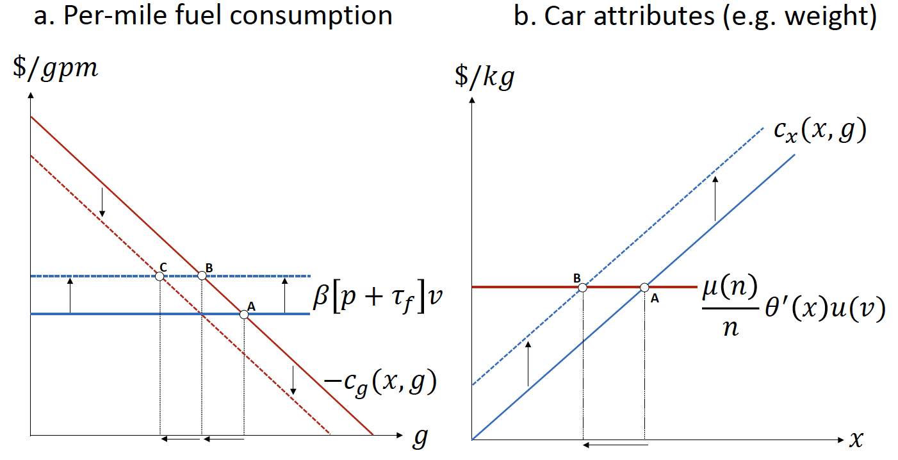

Homework 2 - Example Answers
Question 1. The Treatment of Risk
Suppose a proposed natural resource policy could lead to three possible outcomes:
- A net benefit with a present value of $6,000,000,
- A net benefit with a present value of $2,000,000, or
- A net loss with a present value of $12,000,000.
Assume the probabilities of these outcomes occurring are 0.75, 0.20, and 0.05 respectively, and that society is risk-neutral.
Q1a.
Should this policy be implemented or rejected? Explain your reasoning.
Answer: To determine whether the policy should be implemented, we calculate the expected net benefit by multiplying each outcome by its probability and summing the results.
\[ \begin{align} EPVNB &\,=\, 0.75 \times 6 \,+\, 0.20 \times 2 \,+\, 0.05 \times (-12)\\ &\,=\, 4.3\quad\text{(in million dollar)} \end{align} \] Since the expected net benefit is positive ($4,300,000) and society is risk-neutral—meaning decisions are based solely on expected values without regard to risk—the policy should be implemented.
Q1b.
Do you think risk neutrality is a realistic assumption in this scenario? Or would you personally be more risk-averse and place greater emphasis on the potential for a large loss?
Answer: While the risk-neutral analysis suggests implementing the policy, in reality, many individuals and societies are risk-averse, especially when there’s a possibility of a significant loss. The potential for a $12,000,000 loss, even with only a 5% probability, might cause considerable concern.
Personally, I would be more risk-averse in this situation. The anxiety and potential impact associated with such a large loss could outweigh the attractiveness of the expected net benefit. I might weigh the negative outcome more heavily than its probability suggests, possibly deciding against implementing the policy despite the positive expected value.
Question 2. The Role of Discount Rate
Consider the impact of discount rates on long-term environmental projects. Suppose a proposed climate change mitigation strategy is expected to prevent $600 billion in damages 60 years from now.
Q2a.
What is the maximum amount we should be willing to invest today to eliminate those future damages if the discount rate is 2%?
Answer: To determine the maximum amount we should be willing to invest today to eliminate $600 billion in damages 60 years from now at a 2% discount rate, we need to calculate the present value (PV) of those future damages.
\[ PV = \frac{FV}{(1+r)^{n}} \] Where: • \(FV\): Future Value ($600,000,000,000) • \(r\): Discount rate (2% or 0.02) • \(n\): Number of periods (60 years)
The PV is $182,869,359,875. Therefore, at a 2% discount rate, we should be willing to invest approximately $182.85 billion today to eliminate $600 billion in damages 60 years from now.
Q2b.
How does this amount change if the discount rate increases to 10%?
Answer: If the discount rate increases to 10%, we follow the same process with the new rate. The PV is then $1,970,562,169. Therefore, at a 10% discount rate, we should be willing to invest approximately $1.97 billion today to eliminate $600 billion in damages 60 years from now.
Question 3. Contingent Valuation Method
What are the main challenges in using the contingent valuation method (CVM) for environmental valuation, and how can researchers address these challenges?
Answer:
Please refer to the lecture slides.
Question 4. Designing Policies to Make Cars Greener
The representative consumer has utility that is quasi-linear in transportation services and other goods, valued in dollars, such that the social welfare is also valued in dollars and is given by the following expression: \[\begin{align*} W(n, x, v, g) = \mu(n)\times\theta(x)\times u(v) + y + n\times c(x, g) - n\times[p + d]\times g\times v, \end{align*}\] where
- \(n\) is the total number of cars (on a per-capita basis);
- \(x\) is a vector of average car attributes (e.g., size and horsepower);
- \(v\) is the average number of miles that each car travels;
- \(g\) is average per-mile fuel consumption;
- \(p\) is the per-gallon private marginal cost of fuel;
- \(d\) is the per-gallon marginal social damage from fuel consumption;
- \(y\) is the representative consumer’s exogenous income.
The expression \(\mu(n)\times\theta(x)\times u(v)\) is a value of transportation services generated through the total number of cars, their average attributes (all defined as “goods” that increase utility), and their average utilization, where
- \(\mu'(\cdot) > 0\) and \(\mu''(\cdot) \leq 0\);
- \(\theta'(\cdot) > 0\) and \(\theta''(\cdot) \leq 0\);
- \(u'(\cdot) > 0\) and \(u''(\cdot) \leq 0\),
meaning that \(\mu(\cdot) > 0\), \(\theta(\cdot) > 0\), and \(u(\cdot) > 0\) may display diminishing marginal utility values. We interpret \(\mu(n)\times\theta(x)\times u(v)\) as the quality-adjusted utility derived from driving, scaled by a function of market size.
The expression \(n\times c(x, g)\) is total costs for \(n\) cars with average attributes \(x\) and fuel consumption \(g\), where
- \(\frac{\partial c(x,g)}{\partial x}\equiv c_{x}(x,g) > 0\);
- \(\frac{\partial^{2} c(x,g)}{\partial x^{2}}\equiv c_{xx}(x,g) > 0\);
- \(\frac{\partial c(x,g)}{\partial g}\equiv c_{g}(x,g) < 0\);
- \(\frac{\partial^{2} c(x,g)}{\partial^{2} g}\equiv c_{gg}(x,g) < 0\);
- \(\frac{\partial^{2} c(x,g)}{\partial x\partial g}\equiv c_{xg}(x,g) < 0\),
meaning that a per-car cost \(c(x, g)\) is increasing and convex in attributes, decreasing and concave in per-mile fuel consumption, and the marginal cost of attributes is lower for cars with higher per-mile fuel consumption.
Meanwhile, the expression \(n\times (p + d) \times g\times v\) is total private expenditures on fuel \((n\times p\times g\times v)\) plus total external damages from fuel consumption \((n\times d\times g\times v)\).
Part 1. Consumer Welfare (Q4a-Q4c)
Let us assume the existence of a benevolent Social Planner who makes all the decisions in the economy. The Social Planner is benevolent because the Social Planner’s objective is to maximize the social welfare by allocating available resources in the economy.
The Social Planner maximizes the social welfare \(W\) by choosing \(n,x,v\), and \(g\): \[ \begin{align*} \max_{n,x,v,g}\; W \,=\, \mu(n)\times\theta(x)\times u(v) + y + n\times c(x, g) - n\times[p + d]\times g\times v \end{align*} \] The following is the first-order conditions (FOCs) that characterize welfare maximization: \[ \begin{align} \frac{\partial W}{\partial g} &\,=\, -n \times [\, c_{g}(x,g) \,+\, (p+d)\times v \,] = 0;\tag{1}\\ \hspace{3cm}\notag\\ \frac{\partial W}{\partial x} &\,=\, \mu(n)\times \theta'(x)\times u(v) \,-\, n\times c_{x}(x,g) = 0;\tag{2}\\ \hspace{4cm}\notag\\ \frac{\partial W}{\partial v} &\,=\, \mu(n)\times \theta(x)\times u'(v) \,-\, n\times (p + d)\times g = 0;\tag{3}\\ \hspace{4cm}\notag\\ \frac{\partial W}{\partial n} &\,=\, \mu'(n)\times \theta(x)\times u(v) \,-\, c(x,g) - (p + d)\times g \times v = 0.\tag{4} \end{align} \] Denote the solution to the FOCs (1)-(4) by \((n^{o}, x^{o}, v^{o}, g^{o})\).
Q4a.
- According to the model, is every mile driven in a high-quality car more enjoyable than in a low-quality car?
- Explain this using the expression for the quality-adjusted utility derived from driving, \(\mu(n)\times\theta(x)\times u(v)\).
Answer: Since \(\theta'(\cdot) > 0\), every mile driven in a high-quality car is more enjoyable than one in a low-quality car.
For \(x_{H} > x_{L}\), the following holds for any \(n\) and \(v\): \[ \mu(n)\theta(x_{H}) u(v) \,>\, \mu(n)\theta(x_{L}) u(v) \]
Q4b.
- According to the model, is the value of quality greater if the car is to be driven more often?
- Explain this using the expression for the quality-adjusted utility derived from driving, \(\mu(n)\times\theta(x)\times u(v)\).
Answer:
Since \(u'(\cdot)>0\), the value derived from quality is greater if the car is to be driven more often.
For \(v_{H} > v_{L}\), the following holds for any \(n\) and \(x\): \[ \mu(n)\theta(x) u(v_{H}) \,>\, \mu(n)\theta(x) u(v_{L}) \]
Q4c.
- Provide economic intuition on each of the FOCs (1), (2), (3), and (4).
Answer:
Equation (1) says that the marginal benefit of an increase in per-mile fuel consumption in terms of a lower up-front purchase cost for the car should be set equal to the marginal social cost of the implied increase in fuel consumption (i.e., including both private expenditures on fuel and external damages from greenhouse gas emissions).
Equation (2) says that the marginal benefit of better car attributes (e.g., size) should be set equal to the marginal impact on the car’s up-front purchase cost.
Equation (3) says that the marginal benefit of a mile should be set equal to the per-mile marginal social cost of fuel consumption.
Equation (4) says that the marginal benefit of a car should be set equal to the marginal cost, inclusive of the up-front purchase cost, as well as the social cost of the car’s fuel consumption.
Part 2. Policy Options in the Presence of Fuel Economy Internality (Q4d-Q4h)
The regulator (government)‘s objective is the same as the social planner’s one—maximizing the social welfare. Unlike the social planner, however, the regulator cannot freely allocate available resources in the economy. Instead, the regulator uses policy tools, such as taxes and subsidies, to achieve the socially optimal allocation of resources given the agents’ optimizing behaviors.
The regulator considers the effects of (1) fuel taxes, (2) fuel-economy standards based on car attributes—as well as (3) a tax on cars—that could apply individually or simultaneously to affect behavior along various dimensions of consumer choice.
- A fuel tax imposes a per-gallon tax on fuel consumption.
- Let \(\tau_{f}\) be this tax, such that the total tax paid by consumers is \(\tau_{f}\times n\times g\times v\).
- A traditional fuel-economy standard imposes a maximum per-mile fuel consumption rate.
- Let \(\tau_{g}\) be the implicit tax rate due to the standard. Note that this idea makes sense, because the fuel-economy standard can act as a tax on per-mile fuel consumption when the regulator effectively forces car manufacturers to invest in technology and design improvements that increase the fuel efficiency of their vehicles.
- Let \(\sigma > 0\) be the fuel-economy standard, such that the total tax paid by consumers is \(\tau_{g}\times (g - \sigma) \times n\).
- An attribute-based fuel-economy standard replaces the fixed standard above with one that depends on car attributes.
- Let this standard be given by \(\sigma(x) > 0\), such that the total tax paid by consumers is now \(\tau_{g}\times [\,g - \sigma(x)\,] \times n\).
- A car tax.
- Let \(\tau_{n}\) be this per-car tax, such that the total tax paid by consumers is \(\tau_{n}\times n\).
These taxes (or subsidies, in the case of a negative tax) create policy incentives or “wedges” that modify consumer behavior, and the regulator potentially allows for all of the policies to apply simultaneously. But note that any of the policies could be “turned off” by setting the appropriate tax incentives to zero. Further, since the traditional fuel-economy standard is simply a special case of the attribute-based standard (i.e., with \(\sigma(x) = \sigma\) and \(\sigma'(x) = 0\)), the regulator will not separately model the traditional standard.
Additionally, the regulator considers the share of future fuel consumption that consumers perceive at the time they purchase their car, denoted by \(\beta > 0\).
- A value of \(\beta = 1\) implies that the consumer properly values a dollar of future fuel savings at exactly $1;
- A value of \(\beta < 1\) implies that the consumer undervalues such savings.
Let \(U\) be the consumer’s utility. Given these assumptions, below are the first-order conditions (FOCs) that characterize consumer’s utility maximizing behavior in the presence of the above policies: \[ \begin{align} \frac{\partial U}{\partial g} &\,=\, -n [\, c_{g}(x,g) \,+\, \beta(p+\tau_{f}) v - \tau_{g} \,] = 0;\tag{5}\\ \hspace{3cm}\notag\\ \frac{\partial U}{\partial x} &\,=\, \mu(n) \theta'(x) u(v) \,-\, n c_{x}(x,g) + \tau_{g} n \sigma'(x) = 0;\tag{6}\\ \hspace{4cm}\notag\\ \frac{\partial U}{\partial v} &\,=\, \mu(n) \theta(x) u'(v) \,-\, n (p + \tau_{f}) g = 0;\tag{7}\\ \hspace{4cm}\notag\\ \frac{\partial U}{\partial n} &\,=\, \mu'(n) \theta(x) u(v) \,-\, c(x,g) - \beta[\,p + \tau_{f}\,] g v - \tau_{g}[\, g - \sigma(x) \,] - \tau_{n} = 0.\tag{8} \end{align} \] Denote the solution to the FOCs (5)-(8) by \((n^{*}, x^{*}, v^{*}, g^{*})\).
Note that the multiplication notation ‘\(\times\)’ is suppressed in the above FOCs.
Q4d.
- Consider a comparison between the set of FOCs (1)-(4) and the set of FOCs (5)-(8).
- Note that skipping a function’s argument (e.g., writing \(\mu(n)\) and \(\mu'(n)\) as \(\mu\) and \(\mu'\), respectively) when writing out the FOCs can make the comparison more convenient.
- Would consumer choices deviate from the welfare-maximizing conditions if all the policy options are turned off (i.e., \(\tau_{f} = 0, \tau_{g} = 0\), and \(\tau_{n} = 0\))?
- Provide at least two reasons why or why not consumers would do so.
Answer:
If all the policy options are turned off, the FOCs (5-8) become: \[ \begin{align} \frac{\partial U}{\partial g} &\,=\, -n [\, c_{g}(x,g) \,+\, \beta pv \,] = 0;\tag{5}\\ \hspace{3cm}\notag\\ \frac{\partial U}{\partial x} &\,=\, \mu(n) \theta'(x) u(v) \,-\, n c_{x}(x,g) = 0;\tag{6}\\ \hspace{4cm}\notag\\ \frac{\partial U}{\partial v} &\,=\, \mu(n) \theta(x) u'(v) \,-\, n p g = 0;\tag{7}\\ \hspace{4cm}\notag\\ \frac{\partial U}{\partial n} &\,=\, \mu'(n) \theta(x) u(v) \,-\, c(x,g) - \beta p g v = 0.\tag{8} \end{align} \]
Note that without a fuel tax, there is no internalization of the external damages caused by fuel consumption. Additionally, policymakers do not account for consumers’ potential behavioral biases when assessing fuel economy savings. A comparison of the first-order conditions (FOCs) in equations (1)-(4) and (5)-(8), with \(\tau_f = 0\), \(\tau_g = 0\), and \(\tau_n = 0\), reveals that the socially optimal allocation \((n^{o}, x^{o}, v^{o}, g^{o})\) differs from the market equilibrium allocation \((n^{*}, x^{*}, v^{*}, g^{*})\) when these policy instruments are absent.
Q4e.
Consider a comparison between the set of FOCs (1)-(4) and the set of FOCs (5)-(8).
Suppose the regulator sets the fuel tax rate to the marginal damage of fuel consumption in the spirit of the Pigouvian tax, so that \(\tau_{f} = d\).
- If the consumer properly values a dollar of future fuel savings at exactly $1 (i.e., \(\beta = 1\)), what is the welfare-maximizing tax rates \(\tau_{g}\) and \(\tau_{n}\)?
- Provide economic intuition on this result.
Answer: Comparing the welfare-maximizing conditions in Equations (1)–(4) to the consumer behavioral conditions in Equations (5)–(8) implies that the first-best policy includes a fuel tax given by \(\tau_{f} = d\), i.e., a Pigouvian tax set equal to marginal damages. In the absence of consumer undervaluation (\(\beta = 1\)), the fuel tax alone is the first-best policy. Moreover, no combination of alternative policies can achieve the first-best outcome without a gasoline tax, which is necessary to create the appropriate incentive on the miles-driven margin.
Q4f.
Consider a comparison between the set of FOCs (1)-(4) and the set of FOCs (5)-(8).
Suppose the regulator sets the fuel tax rate to the marginal damage of fuel consumption in the spirit of the Pigouvian tax, so that \(\tau_{f} = d\).
- In the presence of undervaluation (\(\beta < 1\)), if the regulator turns off fuel-economy standard and car tax (i.e., \(\tau_{g} = 0\) and \(\tau_{n} = 0\)), how would consumers deviate from the welfare-maximizing fuel consumption and the welfare-maximizing number of cars?
Answer: Equations (5)-(8) becomes: \[ \begin{align} \frac{\partial U}{\partial g} &\,=\, -n [\, c_{g}(x,g) \,+\, \beta(p+d) v \,] = 0;\tag{5}\\ \hspace{3cm}\notag\\ \frac{\partial U}{\partial x} &\,=\, \mu(n) \theta'(x) u(v) \,-\, n c_{x}(x,g) = 0;\tag{6}\\ \hspace{4cm}\notag\\ \frac{\partial U}{\partial v} &\,=\, \mu(n) \theta(x) u'(v) \,-\, n (p + d) g = 0;\tag{7}\\ \hspace{4cm}\notag\\ \frac{\partial U}{\partial n} &\,=\, \mu'(n) \theta(x) u(v) \,-\, c(x,g) - \beta[\,p + d\,] g v = 0.\tag{8} \end{align} \]
Due to consumers undervaluing fuel savings (\(\beta < 1\)), the characterization of the socially optimal allocation, as described by equations (1)-(4), differs from that of the market economy when undervaluation (\(\beta < 1\)) occurs, even with a Pigouvian tax. Specifically, the market will result in a higher number of cars, greater fuel consumption, more miles driven, and more of the attribute than what is socially optimal.
Q4g.
- Consider a comparison between the set of FOCs (1)-(4) and the set of FOCs (5)-(8).
- Suppose the regulator sets the fuel tax rate to the marginal damage of fuel consumption in the spirit of the Pigouvian tax, so that \(\tau_{f} = d\).
- In the presence of undervaluation (\(\beta < 1\)), if the regulator sets the uniform target of \(\sigma(x) = g^{o}\) (implying \(\sigma'(x) = 0\)), what are the welfare-maximizing tax rates of \(\tau_{g}\) and \(\tau_{n}\) in terms of the model parameters \(\beta\), \(p\), and \(d\), and the Social Planner’s solutions \(g^{o}\) and \(v^{o}\)?
Answer: In the presence of undervaluation (\(\beta < 1\)), the first-best policy must also include a fuel-economy standard with an implicit tax rate of \(\tau_{g} = (1-\beta)(p +d)v^{*}\) and a uniform target of \(\sigma(x) = g^{*}\), as well as a car tax given by \(\tau_{n} = (1-\beta)(p+d)g^{*}v^{*}\).
Q4h.
- Provide economic intuition on the policy options in the presence of undervaluation (\(\beta < 1\)) described in Q4f and Q4g.
Answer:
The standard is equivalent to a revenue-neutral tax on per-mile fuel consumption, with the tax rate set equal to the undervalued savings from marginal improvements in fuel economy, and the car tax is set equal to the undervalued portion of total lifetime fuel expenditures.
Part 3. The Effect of a Fuel Tax (Q4i)
Raising the price of fuel via a fuel tax causes consumers to adjust their behavior across a variety of aspects. Both panels below correspond respectively to the FOCs (5), (6), and (7) with a fuel tax but no other policies (i.e., \(\tau_{f} > 0\) with \(\tau_{g} = 0\) and \(\tau_{n} = 0\)).
- Note that in both panels,
- The number of cars (\(n\)) and the miles traveled (\(v\)) are implicitly held fixed;
- The marginal utility of car attributes (\(\theta'(x)\)) is held constant as well.
In panel (a), the marginal benefit of fuel economy is described by \(\beta[p+\tau_{f} ]v\), and the marginal cost of fuel economy is described by \(-c_{g}(x, g)\). Due to the assumption \(c_{xg}(x,g) < 0\), the marginal cost of fuel economy shifts down if car attributes (\(x\)) decrease.
In panel (b), the marginal benefit of car attribute is described by \([\frac{\mu(n)}{n}]\theta' (x)u(v)\), and the marginal cost of car attributes is described by \(c_{x}(x, g)\). Due to the assumption \(c_{xg}(x,g) < 0\), the marginal cost of car attributes shifts up if consumers demand greater fuel economy (lower \(g\)).
Q4i.
- Suppose the regulator raises the price of fuel via a fuel tax \(\tau_{f}\).
- Explain the transition from point A to point B in panel (a) while the marginal cost of fuel economy is held fixed.
- Explain the transition from point A to point B in panel (b).
- Explain the transition from point B to point C in panel (a).
- Provide economic intuition on a consumer’s response to an increase in the fuel tax.
Answer:
Panel a corresponds to Equation (5) and shows the effects of a fuel tax on per-mile fuel consumption, holding miles (\(v\)) fixed. The initial optimum occurs at point A, where the marginal benefit of per-mile fuel consumption (red line) and marginal cost (blue line) intersect. The fuel tax causes the marginal cost of per-mile fuel consumption to shift upward, as indicated by the vertical arrows pointing upward. Holding car attributes (\(x\)) fixed, this shift leads to a new optimum at point B and a corresponding reduction in per-mile fuel consumption (\(g\)), as indicated by the horizontal arrow. Simultaneous reductions in car attributes (\(x\)) lead the marginal benefit of per-mile fuel consumption to shift downward, as indicated by the vertical arrows pointing downward, reinforcing this reduction in per-mile fuel consumption, with the overall optimum occurring at point C.
Panel b corresponds to Equation (6) and shows the effects of a fuel tax on car attributes (e.g., weight), holding miles (\(v\)) fixed. The marginal cost of car attributes (blue line) shifts upward as a result of lower per-mile fuel consumption, whereas the marginal benefit (red line) remains fixed. Thus, the optimal level of attributes (\(x\)) decreases (from point A to point B).
## Reference - Anderson and Sallee. 2016. “Designing Policies to Make Cars Greener,” Annual Review of Resource Economics. 8:157-180.